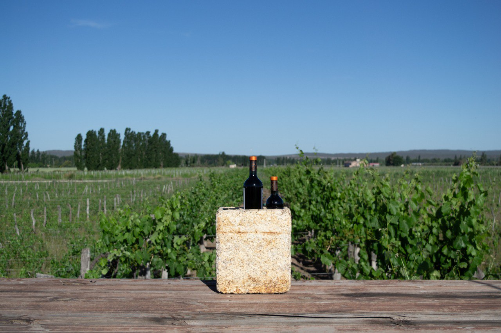
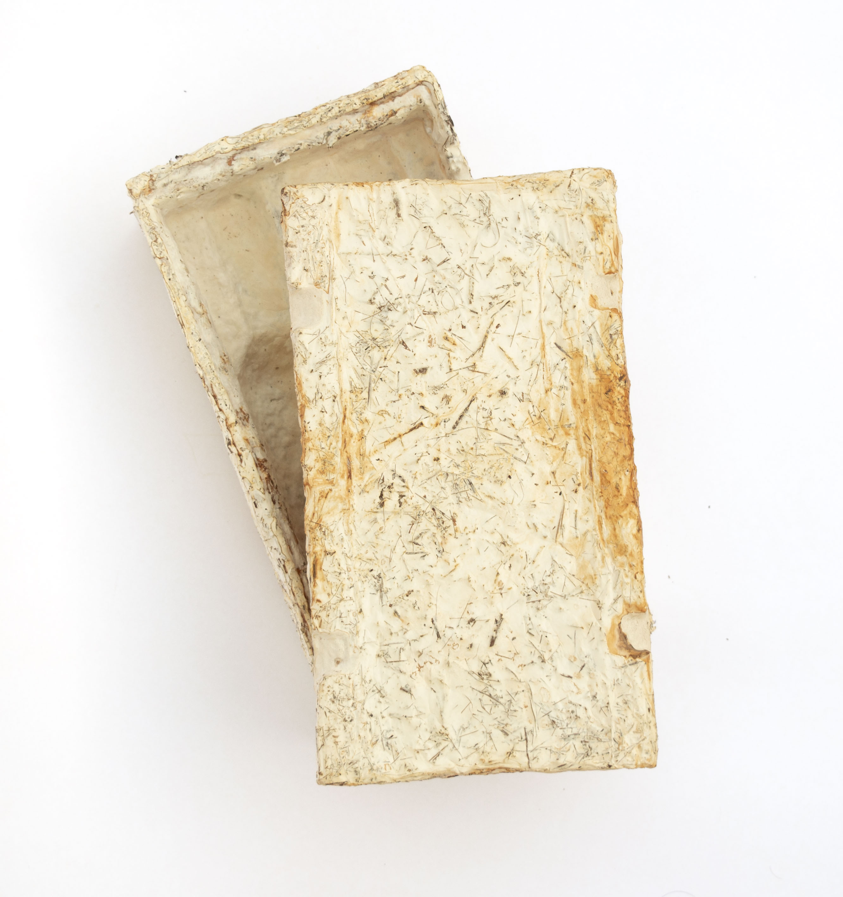
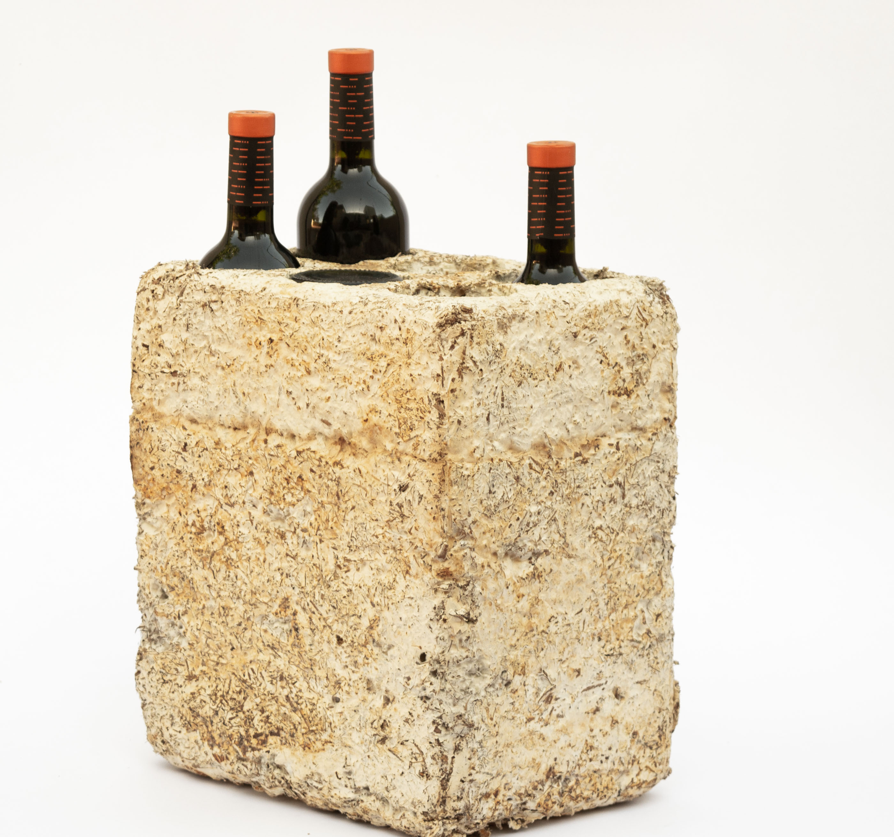
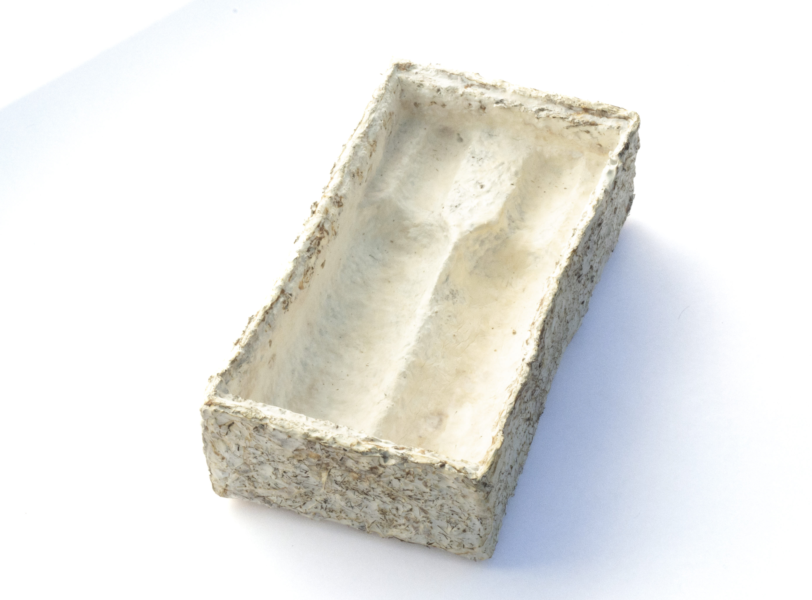
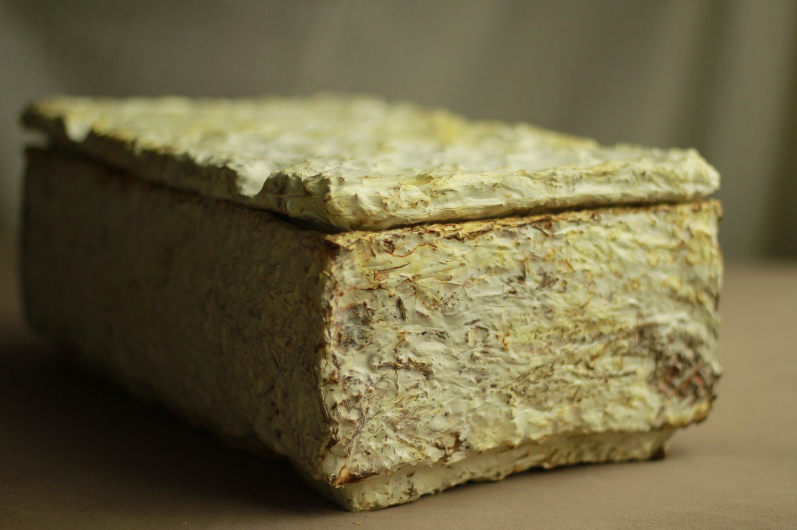
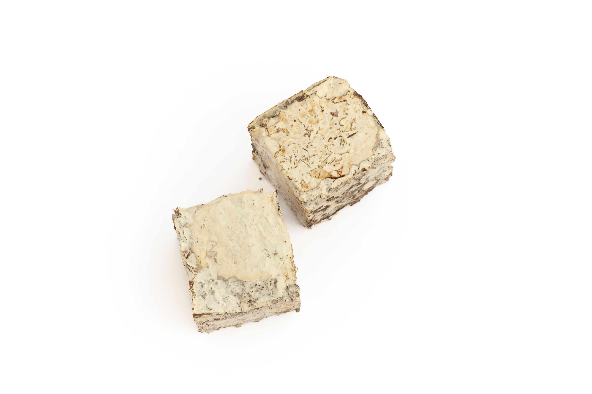

Biofabrication!
🍄+🍇=📦
We “grow” compostable and sustainable wine packaging materials, using two ingredients:
mycelium (fungi) and vineyard waste (vine pruning).
Protect your wine
Biopackaging is stronger than styrofoam, lighter than wood, and does not require an outer cardboard container.
These boxes protect your wine from vibrations, temperature swings, and impacts, and are ready to ship to retailers and customers.
They can be grown at the winery, using your own vineyard waste.
The Process is Simple
- Shred your vine pruning into a mulch.
- Clean the shredded pruning, and mix with a small amount of fungi-inoculated seeds.
- Place the mixture into a wine-box mould, and wait 5 days for the mycelium to colonize the vineyard cuttings.
- Remove the newly grown biopackaging from the mould and allow to dry.
- Heat the box to 80˚C, to remove any remaining moisture and stop further mycelial growth.
- Ship your wines around the world!
    
Our Goal: Empower Wineries to Grow Their Own Boxes
We enable wineries to GROW their own sustainable packaging.
For 10,000 years, crushed grapes and fungi (yeast) have produced wine: 🍄+🍇=🍷
Now, wineries can make wine and grow packaging from the SAME vines: 🍄+🍇=📦
We’re Looking For:
** Our Premier Winery Partner**
We are looking for the FIRST winery in the world to use mycelium biopackaging.
We will help you grow your first 1000 boxes, and teach you the process. Your brand will bring this technology to the world, and we will join you on stage at the world’s wine events, to support the announcement.
The 4m3.bio Team
We are a team of experts in biofabrication, mycology, and decentralized business: passionate about growing sustainable packaging.
| Mica Vera | PM / Winery Relations | |
| Dr. Pablo Postemsky | Chief Mycologist | |
| Kevin Gartner | Biofabrication Specialist | |
| Stefano Gallerani | Industrial Designer | |
| Mike Tango Bravo | Project Lead | |
|  |